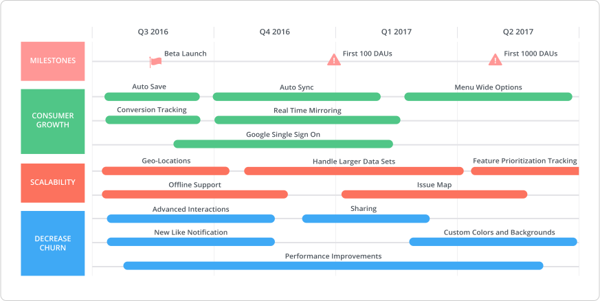
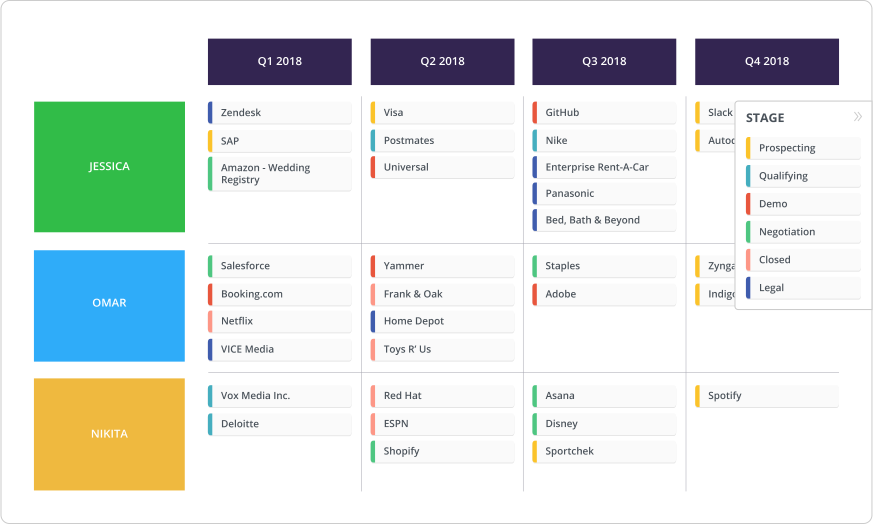
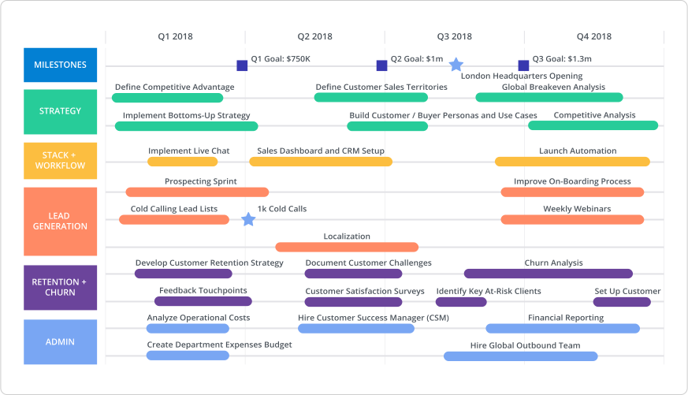
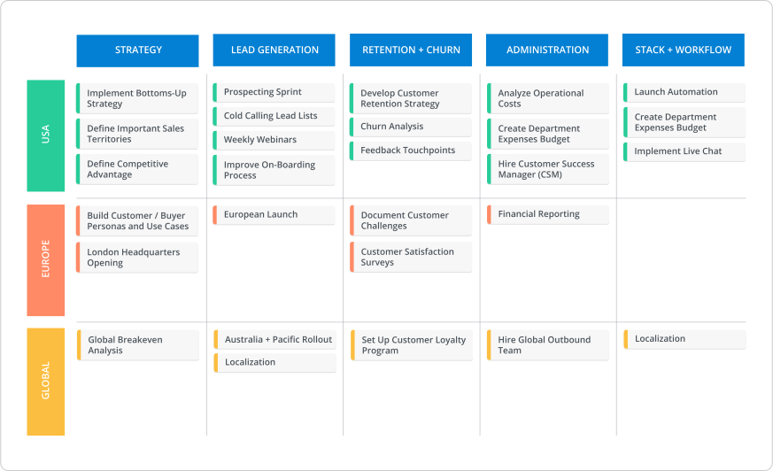

What’s up? I’m Jalil, VP of Sales and Customer Success at Roadmunk.
As the head of our sales operations here for several years, I’ve evangelized the idea that sales roadmaps are a powerful tool that sales people need to fulfill at least one of three use-cases:
- Show your customers and prospects which direction your business and product are headed towards.
- Outline the biggest deals in your sales pipeline and how long their sales cycles will be, so you can track key dates like when the customer signs or negotiations occur.
- Plan and visualize a sales rep’s career trajectory and their contribution to revenue.
But just like product roadmaps, sales roadmaps evolve with your growing business. (After all, a sales roadmap is also a statement of intent, not a set-in-stone plan). And while a sales roadmap might fulfill a certain use case at one point in time of your business, it may not necessarily be valuable for that same purpose after your business has matured.
As the head of sales team that has matured from just me by lonesome to over a dozen of us, I’ve seen our sales roadmap evolve each step of the way. So, I thought I’d walk you through how you can expect your sales roadmap to evolve as your business grows from a startup to an SME to an enterprise.
Ready? Let’s do this.
If your product team is just as "agile" as your sales team, check out our guide to agile roadmaps.
The sales roadmap for a startup
As a startup, you don't necessarily need a sales roadmap to trace what deals you're trying to close. You’ve got minimal customers and are still hacking away at product-market fit. You can map your sales goals and targets, but what you need more at this point is a sales tool that gets you to “yes” quickly.
When Roadmunk was at this stage, our sales roadmap didn’t differentiate much from our product roadmap. It focused on upcoming product features and sales goals we wanted to hit. We’d pull it up to prospects to say, “This is what we’re building.” Presenting our product strategy managed customer expectations and boosted our credibility as a business. We weren’t just delivering a sales-y spiel of “Trust me, this product is what you need and it’ll only get better.”
Who owns the roadmap at this stage?
When you’re a startup, literally everyone should have access to your sales roadmap. Your headcount should be small enough that you can feasibly have everyone collaborate on this living document, since product and business knowledge should be consistent across the entire business at this stage.
What to include on this roadmap?

Essentially the way I think of the sales roadmap for a startup is that it’s a market-ready product roadmap. What you want to include on this roadmap is all your product-centric items for the next few months, quarters or years that you want to share with your customers. Remember, you’re treating your sales roadmap as a sales tool to push prospective customers down the funnel. Reframe your sales roadmap as a companion piece to your product roadmap. Not only should the sales roadmap somewhat mimic your product roadmap, it should capture customer requests and ideas.
In Roadmunk’s “infancy” stage, we’d take inputs we heard on calls in the sales process and consolidate them into our sales roadmap, categorize them and tag them against specific customers. That way when something got released, I could go into our roadmap and filter based on that feature to pull up every tagged customer. This made prospecting and revisiting old sales leads far, far easier. It also showed our customers that we’re good listeners, pushing them closer to “hell yeah.”
But the important thing to keep in mind about the sales roadmap at this stage is to make it market-friendly. No complex product jargon! Use terminology customers will understand. Also, include as many details in your items as possible like mocks, links to videos, or any appropriate collateral you can pull up during a roadmap presentation, that way you can really speak to your product’s (and business’) next steps.
Build a market-friendly sales roadmap by customizing our sales roadmap template.
The sales roadmap for an SME
This is the stage where we shift away from a product roadmap “replica” and more towards a roadmap charting your largest sales deals (not every single deal, just the highest-impact ones). SMEs consider sales roadmaps less of a tool for closing deals and more of an internal-facing tool to align everyone on how the sales mission is advancing.
Alternatively, this roadmap also highlights major clogs in the sales strategy. For example, we included a “Stage” field that when we filtered by, would show every customer’s current stage, such as prospecting, demos or negotiations. If I saw 70% of our prospects were stuck in negotiations and two or three sales reps were responsible for these deals, I knew there was a big risk there and I needed to pay serious attention to this bottleneck.
For salespeople thinking that CRMs can track things like sales stage, I say yes they can BUT as your business model develops and your lead/customer volume increase, a visualization achieves quicker alignment. You can literally point to a roadmap that’s filtered on owner and stage and ask, “Hey, what’s going on with these deals? What’s the bottleneck and how can I help?”
Who owns the roadmap at this stage?
At the intermediate stage of a business, the sales roadmap should be almost entirely controlled by your sales manager, in conjunction with your product team. The reason I say product is because they’ll be the ones to validate what you can offer to customers when trying to seal the deal; they’re essentially a secondary function of your sales roadmap.
What to include on this roadmap?

I mentioned above, this is when you map your largest deals and priority customers. But you’ll want to organize your roadmap based on fields like the stage of the deal, win/loss analysis or anticipated revenue. But you want to keep it straightforward because at an SME, not everyone will comprehend the sales roadmap as intuitively as they did when you were a startup and there was shared knowledge of each part of the business. Being at an SME means siloed teams, so using the roadmap for alignment on the sales strategy is even more vital.
When we reached this stage at Roadmunk, we also built in an HR component into our sales roadmap. We visualized our sales reps’ trajectories and growth by including owners on the roadmap and grouping deals based on who was responsible for them. This helped modify the sales roadmap from just a sales tool to also an accountability mechanism.
Keep an eye on those major deals by creating a sales roadmap like above. Click here.

The sales roadmap for an enterprise
While we haven’t quite reached enterprise status here at Roadmunk, the reality is your sales roadmap at an enterprise has A LOT of ground to cover. With endless deals and prospects, you need to really prioritize the hefty deals, as well as the strategic initiatives your team will execute to secure more moula. One major evolution for a sales roadmap at this stage is assigning revenue to your major deals.
We started to do this at Roadmunk last year with the addition of our numeric fields. This field really helps us as a sales team when we’re bombarded with feature requests and feedback. We can go to our product team or higher-ups and point out that we’ve got six customers who want this integration. And as you can see on the roadmap, all of these fall under deal sizes that are $100,000 plus. Attaching numbers to your sales roadmap goes a long way in starting substantial dialogue with our product team and C-level execs.
Who owns the roadmap at this stage?
It’s almost exclusively your VP of Sales or CRO owning the roadmap at this stage. And honestly, they’re concerned with their biggest transactions. Since we’re talking enterprises, your executive team of course has a stake in this roadmap too. And don’t forget about product. They’ll also have a semi “veto” on the roadmap—as your biggest transactions will be influenced by your product strategy.
What to include on this roadmap?

Again, at the enterprise-level, your stakeholders are most concerned with your top-tier deals and customers, so you can expect to see your bigger customers laid out on your sales roadmap and the strategic sales initiatives your team will perform to get their $$, retain them and/or prevent them from churning. You’ll want to pivot the data on your sales roadmap using either revenue and/or the same fields as you would with an SME-based sales roadmap like owner, stage and win/loss analysis.
But at this business level, sales teams can get tricky. What if you have different product lines? Or an inside sales team vs. an external sales team? While there may be an overarching sales strategy, each team has different ways of selling their specific strategies. So, another way to approach your sales roadmap at an enterprise is to develop different views for each team and then roll them up into one consolidated view for you to present to your exec team (we call this a Master roadmap here at Roadmunk). This way each team still has individual control over their own sales strategy, but the VP of Sales or your CRO can get one overall view that captures the most important details of each individual strategy.

And what about when your sales team is scattered around the globe? Short answer: the sales roadmap becomes more critical. While every team may be delivering the same product, what I’ve seen work really well is the sales team in each region–whether it’s Europe, Central America or Australia–creates their own sales roadmap that’s tied to product delivery. Then you can roll them all into one Master sales roadmap like the one above. This can serve as a check and balance to see which region is performing stronger than another.
Need a sales roadmap for your corporate environment? We've got a template for that here.
Evolve your sales roadmap with your growing business
Frankly, I think a lot of sales people view a roadmap as a sales tool, much like we did originally, and less as a tool for accountability and outcomes. But as your business “blooms” and reaches certain stages, you’ll begin to see that dynamic shift.
The sales roadmap cannot fulfill the exact same function at every business stage. Just like we stress that product roadmaps are statements of intent, a sales roadmap also embodies that philosophy. As your sales needs change with business growth, your sales roadmap has to change too to reflect those changes. Otherwise, say peace out to all that $$$ you were hoping to rake in.
No matter what your sales roadmap looks like, build it with Roadmunk's free 14 day trial. Sign up here.